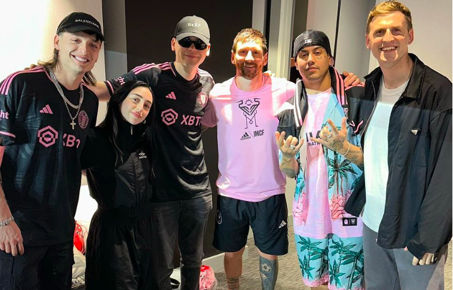
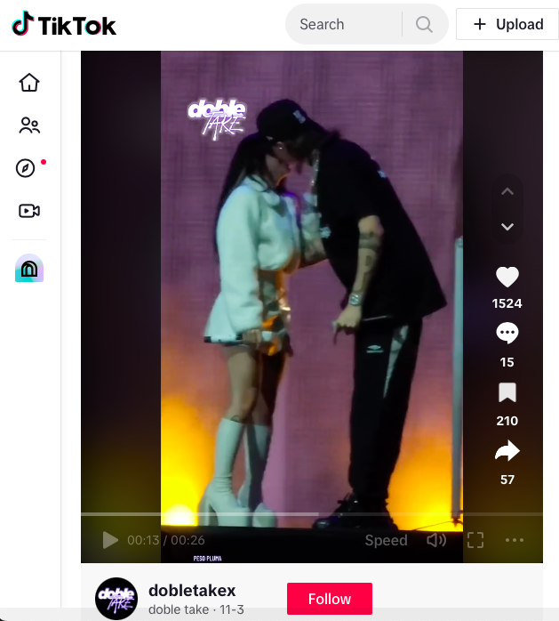
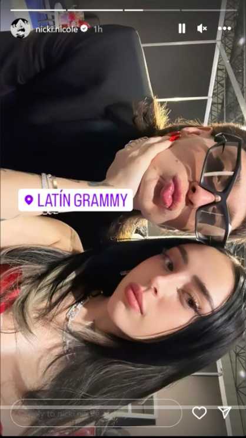

On June 17th, 2023. Peso Pluma and Nicki Nicole performed together the song called "Porlas Noches" on stage at the Telmex 2023 event in Mexico.
Fans and crowd noticed a physical attraction towards each other while performing and comments were made " they look so good together" after Nicki shared a photo on her social media .

After this show, fans were super curious on their next moves and they were spotted together at several places. One being Disneyland on July 2023. Fans were still not sure if they were just friends hanging out together or might be dating.

Next event proceeded to be at the VMA's on September 12th, 2023. Where Peso Pluma attended and was interviewed by Amelia Dimoldenberd. Her and the viewers were intriguied by he response. After Amelia flirted with him, he cofirmed "I have a girlfriend" proudly.

Watch the TikTok video here.
They were also seen together at a soccer game on October 7th,2023 placed at the DRV PNK Stadaium in Fortlauder. They were very happy together and the crowd loved it even more. They took a group photo with the famous player and icon, Messi.
It had been few months already after waking up suspicious on wether they are dating or not. There has been plenty of Interviews done to both of them. Most of the time they answered " we are just friends". However one interview to Nicki Nicole on "Molusco y Los Reyes de la Punta" caught everyone by surprise. Nicki was asked if she was tired of being asked about her and Peso Pluma. Her answers was a shock to Peso Plumas fans. She basically compared him to a dog and a purse. Her words got lost in translation and many fans were angry. Nicki's words were "Imagine if you go out every day with a dog, no one will ask you why you go out every day with a dog; its normal." Overall she admitted "we are getting to know each other"
In addittion to the hate Nicki Nicole was getting on social media about her expression towards Peso Pluma. Peso Pluma felt the need to defend her and posted a Twitter showing he didnt feel offended by any means.

The couple continued to share momments together and Peso Pluma was the first to post a seflie in his Instagram Story. Fans were amazed by this and shared so much love for them.

Finally the momment all fans were waiting for happened at Pepsi Center WTC stage in Mexico City. While performing, the couple got very close together and Peso Pluma reached for a kiss, Nicki Nicole accepted it with much love and surprise. The crowd was not shocked at all as this confirmed they were oficially a couple.
After giving an act of love on stage with their kiss, they continued to show their love for each other. Peso Pluma shouted " i love you" at the end. They recently made their apperance togehter at the Grammy's on November 16th. Nicki Nicole posted a cute selfie on her Instagram story showing off themselves as a date. They were also interviewed where Nicki shared a comment " we admired each other's work and love to support it. We have a great connection in the business area and in our personal life too which i think is why we get along so well. We hope to do another collab together "
Its safe to say that they are couple and look so good togehter. This young couple had fans very intrigued to know. They seem like they work very well together in the music field and so far they have managed to keep their personal life as private as possible. As many celebraties do get together for the fame only, we cannot see for sure their true intentions but wish them the best.